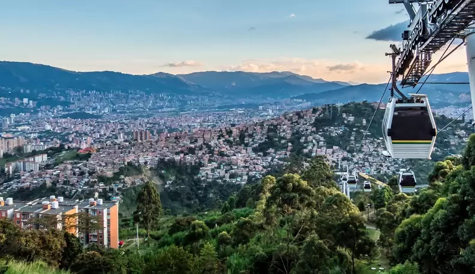
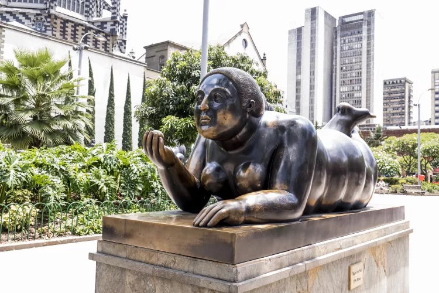
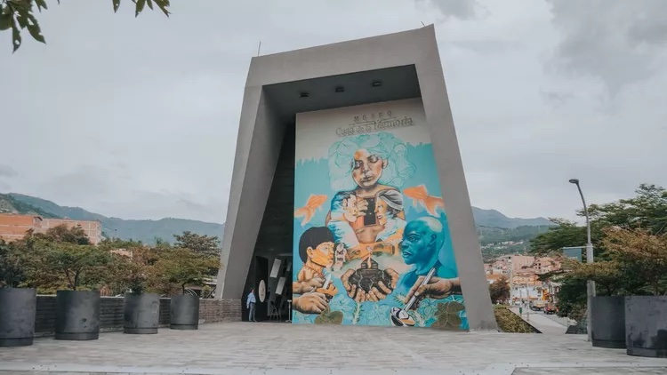

Medellin
Medellin, the City of the Eternal Spring, knows how to reinvent itself. The former base of Pablo Escobar and current haven of digital nomads, there's much more to do here than visit the sights made famous by Netflix's "Narcos." Learn the holistic history of the city by visiting its museums, like the Museo Casa de la Memoria and the Museo Antioquia. See firsthand where formerly dangerous areas have shifted due to innovation and community pluck by touring the graffiti walls of Comuna 13 or riding the Metrocable. Walk its beautiful gardens and attend its flower parade. Stay out all night dancing salsa or clubbing in Poblado. Ground yourself in Barefoot Park, and paraglide high above the streets filled with tropical fruit vendors. To truly appreciate it, allow yourself to see this city not just for what it was or what it is, but also for what it's becoming.
Attractions
The highlights of Medellin include the Museo de Casa de la Memoria, a tasteful homage to the city's tumultuous past, and Comuna 13, a set of barrios
that cling to the side of the hill and provide a canvas for Medellin's best street art.
Parque Arví

Parque Arví is a vast forested nature reserve and a pre-Hispanic archeological site. Entry to the park is free, though certain activities such as bicycle tours, boating excursions, and the butterfly farm charge a fee. Hike the 13 trails, go birding, and browse the small market of food and craft stands. The ride to and from the park over the hills of Medellin provides stunning aerial views of the city's comunas (districts) and the Medellin River. An attraction in its own right, the Metrocable is part of the Medellin Metro, Colombia's only metro system.
The 23 plump bronze statues of Fernando Botero's spread throughout Botero Plaza are said to bring luck and love to all who rub them, known as the "Botero legend." Botero, a famous painter and sculpture from Medellin, developed Boterismo, a style of art combining neo-renaissance, figurative, and contemporary elements, resulting in bulbous people and animals. Botero sculpted and donated all of the plaza's statues, ranging from a plump horse to a voluptuous lounging woman. Located downtown in Medellin's Old Quarter, find it sandwiched between the Museum of Antioquia and the Rafael Uribe Uribe Palace of Culture. It's free to enter, photograph, and rub the statues in the plaza.
Plaza Botero

Museo Casa de la Memoria

A solemn, educational memorial on the wars, armed conflicts, and other violence in Colombia, the Museo Casa de la Memoria serves to document the stories of victims while educating visitors on the past and ongoing violence in the country. A touchscreen timeline allows visitors to read in-depth about the narco cartels, the paramilitarios, the former dictatorship, and the present-day reforms in the country. Other exhibits contain stories and photos of victims, as well as messages from their families. Concerts, workshops, and other events help visitors understand present-day Colombia through the context of its past. Free to visit, find it in Parque Bicentenario.
See over 300 species of fish at South America's largest freshwater aquarium, and check out the over 300 interactive exhibits in the attached science museum. A series of four red cube buildings with outdoor display spaces, a vivarium, a planetarium, and a small television studio, the Parque Explora complex offers activities for kids of all ages. Record your own podcast episode, learn about the history of radio in Colombia, and make life-size pin art. Walk through the dinosaur exhibit, create graffiti, and see massive snakes and reptiles in the vivarium. General admission costs the equivalent of about $5. Reach it by taking the Metro to the Universidad station in Zona Norte.
Parque Explora

Antioquia Museum

The Museo de Antioquia displays Pre-Colombian, colonial, and modern art and creates art by collaborating with resident artists. The permanent collection includes many clay pieces from the region, as well as works by Fernando Botero, the local artist turned international superstar for his curvy Boterismo figures. Colombian artist Pedro Nel Gomez, a pioneer of the Colombian Muralist Movement, also features prominently. Though known for its collection, the museum's work in the community has given it fresh relevance, demonstrated by its award-winning cabaret of sex workers entitled “No One Knows Who I Am,” with performance artist Nadia Granados. Entry to the museum cost the equivalent of about $5. Take the Metro to Parque Berrío to reach it.
Parque de Los Pies Descalzos invites visitors to take their shoes off and experience nature more intentionally through bare feet. Free to enter and explore, the park offers guides to lead patrons through installations and activities centered around the elements of water, air, and land. Stick your feet in the Well of Sounds for water jets to massage your feet, or walk on the Zen Garden's stones to stress your foot fascia. Work your balance by walking on the beams of the Level Towers, or go through the Maze with eyes closed, using your other senses to guide you. Open every day but Monday, reach it by taking the Metro to the La Alpujarra station.
Barefoot Park

Comuna 13's Graffiti Murals

Previously one of the city's most dangerous areas due to violence committed by guerillas of urban militia groups, Comuna 13 has transformed into a bastion of graffiti art and a testament to the city's innovation and rebirth, complete with a giant slide and famous series of escalators. Wall-sized colorful murals cover the streets next to the escalators, installed to aid in transportation and access to job opportunities for residents. Tours by resident guides happen daily, explaining the significance behind each mural and speaking about Comuna 13's past conflicts. To visit, take a tour or take the Metro to the San Javier station, then bus 221i or 225i. Despite recent changes, it is not advised to visit this area at night.
Taking from: CHRISTINE GILBERT
Save money when you stay in Medellin, here some recomendations of accomodation in Medellin.

Medellin Marriott Hotel

Hotel Poblado Alejandria

Diez Hotel Categoria Colombia

The Charlee Lifestyle Hotel